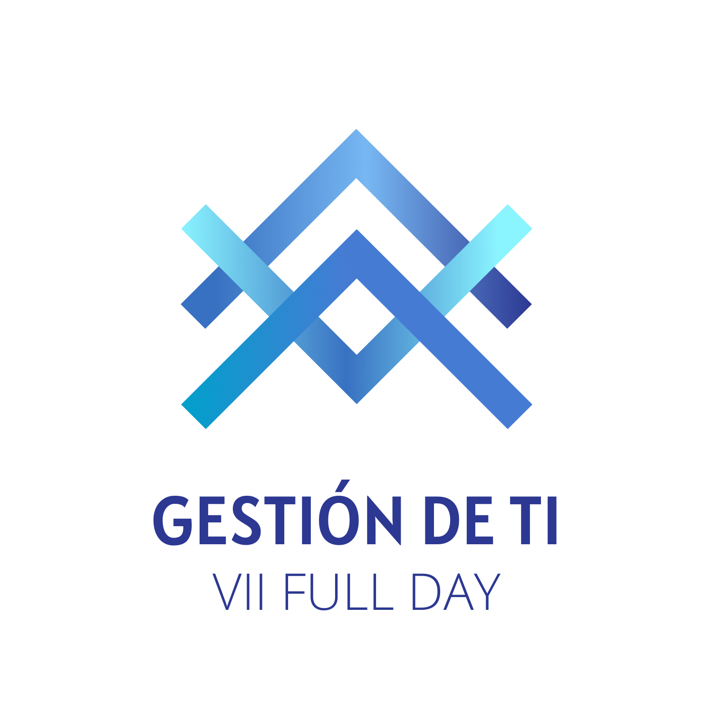
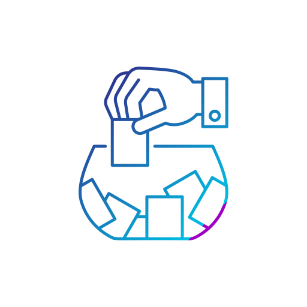
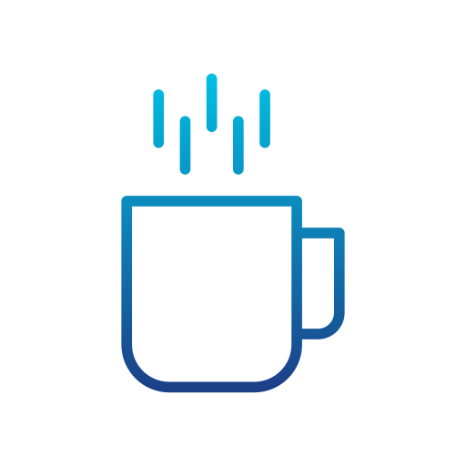
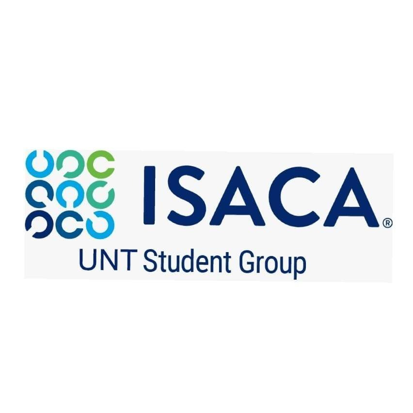
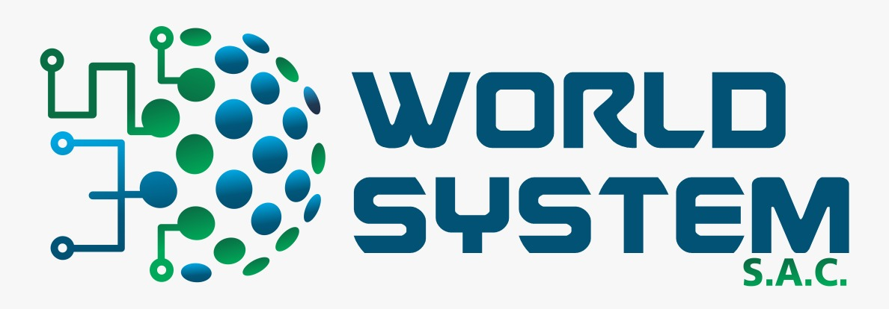

- Ponencias Magistrales
- Material visual
Para el gran día
Registrate aquí
VII Full Day Gestión de TI
La promoción XXII de Ingeniería de Sistemas de la Universidad Nacional de Trujillo, se complace en dar la bienvenida al evento de Full Day de Gestión de TI en su séptima edición para el día 15 de enero del 2022.
No dejes pasar la oportunidad de disfrutar de este Full Day de Gestión TI internacional, para disfrutar y aprender con las mejores ponencias magistrales sobre Gestión de TI.
📅Fecha: 15/01/2022
⏰Hora: 9:00 A.M.
Cronograma
Inicio | 09:00 a.m.
Presentación del evento
Renzo Valladolidradio_button_checked
09:30 a.m. | Ponencia 1
Hoja de ruta para impulsar la transformación digital en un entidad pública
Amparito Acevedo Floresradio_button_checked
Ponencia 2 | 10:30 a.m.
Habilidades blandas en gobierno de TI
Masahi Takahashiradio_button_checked
11:30 a.m. | Ponencia 3
Toma de desiciones en TI
Viviana Ottoneradio_button_checked
Sorteo | 12:30 p.m.
radio_button_checked

13:00 p.m. | Break
radio_button_checked

Ponencia 4 | 15:00 p.m.
Alineamiento de TI con los objetivos de la organización
Rose Mary Monroyradio_button_checked
16:00 p.m. | Ponencia 5
Tema de ponencia
Autor de ponenciaradio_button_checked
Sorteo 02 | 17:00 p.m.
radio_button_checked
17:30 a.m. | Cierre
Clausura de evento
radio_button_checked
Sin certificado
Con certificado
Estudiantes: S/. 10.00
Profesionales: S/. 20.00- Certificado
- Ponencias Magistrales
- Material visual
- Participación en sorteos
Inscripción
Para inscribirte, por favor, llena el siguiente formulario:
Auspiciadores



